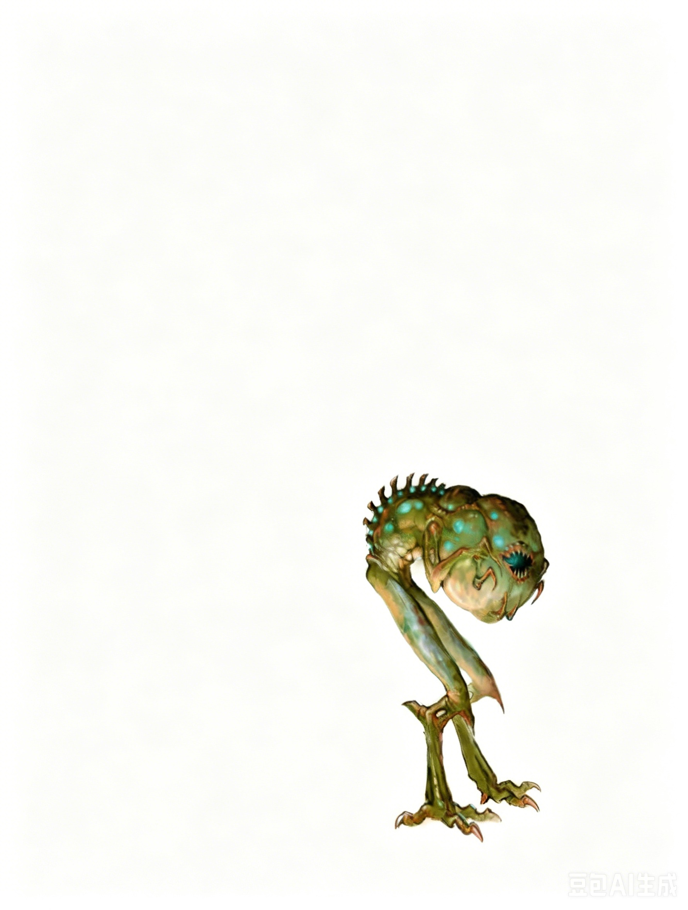

小型异怪 | 挑战级数 7一个膨胀的头部布满跳动的血红色脉络，搭在一具布满斑纹、后背长着骨质突起的身体上。它看似无眼的头部前端突出一个小喙。细长的鸟类般双腿从蜷缩的身体底部延伸而出，末端是尖锐的利爪。
泽恩噬法者 ―― 始终为守序邪恶。
| 生命骰 | 10d8+20（65HP） |
| 先攻 | +7 |
| 速度 | 30 英尺 (6格) |
| 防御等级 | 19，接触 14，措手不及 16（+1体型，+3敏捷，+5天生护甲）；闪避，灵活移动 |
| 失手率 | 20% (武器排斥) |
| 基本攻击/擒抱 | +7 / +2 |
| 攻击 | 2次爪击，每次 +7 (1d4-1) |
| 全力攻击 | 2次爪击，每次 +7 (1d4-1) |
| 占据/触及 | 5 英尺 / 5 英尺 |
| 特殊能力 | 黑暗视觉 60 尺；SR 23；武器排斥 (Su)；反魔场 (Su) |
| 特殊行动 | 反魔场 3/天 |
| 类法术能力 | (施法者等级 10级)：随意使用――秘法视力、解除魔法、识破隐形 |
| 豁免 | 强韧 +5，反射 +6，意志 +7 |
| 属性 | 力量 8，敏捷 17，体质 14，智力 6，感知 11，魅力 6 |
| 技能 | 专注 +5，躲藏 +7，法术辨识 +4，聆听 +0，侦察 +0 |
| 专长 | 战斗施法，闪避，精通先攻，灵活移动 |
| 语言 | 理解通用语 |
| 进化 | 11-15HD (中型)；见后文说明 |
武器排斥 (Weapon Repulsion, Su)：泽恩噬法者持续释放一种念动力场，使所有针对它的攻击具有 20% 的失手率。在反魔场激活时，此能力无效。
反魔场 (Antimagic Field, Su)：类似于法术反魔场，每日可使用 3 次，施法者等级 7 级。该力场以生物为中心扩散，半径为 20 英尺，并持续到噬法者的下一回合开始。
战术综述：泽恩噬法者通常依赖更强大生物的保护与指挥。它们通常与夺心魔 (mind flayers)、邪兽鬼 (rakshasas)、邪恶异界生物，以及邪恶的牧师同行。噬法者通常在战斗中承担辅助角色，通过削弱敌方魔法保护来提高盟友的攻击效果。
一旦进入战斗，泽恩噬法者会使用其解除魔法的能力，优先攻击具有最多魔法灵光的敌人。如果施法者成为威胁，噬法者会靠近目标并激活其反魔场。
生态背景：大多数泽恩噬法者常驻在泽恩的领域中。虽然它们被出售给各种位面生物，但它们在对抗反对其主人的凡人施法者时表现最佳。极少数情况下，噬法者会随恶魔或魔鬼主人成为随行生物，在其他位面展开行动。
泽恩噬法者以其驱散的魔法效果和反魔场抑制的能量为食。
环境：噬法者的存在由购买它们的主人决定。大多数噬法者被安置在地下巢穴中，但少部分会被安放在地表，特别是那些献给“上古元素之眼” (见第 7 页) 的神殿中。
典型身体特征：泽恩噬法者身高约 3 至 4 英尺，体重通常在 80 至 100 磅之间。噬法者无法说话，但能够理解通用语，并服从主人发出的指令。它们的爪子类似猛禽的爪，但更为锋利，且具有灵活的对生爪，用于抓握和精细操作。
阵营与社会：泽恩噬法者始终为守序邪恶 (Lawful Evil)，无论其主人多么残酷或不可靠，它们都会忠诚地追随。像其他邪恶生物一样，噬法者沉迷于残忍，并抓住一切机会让弱者感受到痛苦与恐惧。泽恩噬法者是具有社会属性的生物，它们更喜欢与主人或创造者相伴，而不是独自存在。由于噬法者在对抗强大魔法效果中的特殊作用，主人通常会善待并保护它们。即使是一些比噬法者更强大的随从，也会接到严格的命令，要求照顾和维护这些造物的安全。
高阶泽恩噬法者：每增加 2 个生命骰 (HD)，噬法者的类法术能力的施法者等级提升 1。当泽恩噬法者的施法者等级达到 11 级或更高时，其类法术能力中的解除魔法 (dispel magic) 将升级为高等解除魔法 (greater dispel magic)。
典型财宝：泽恩噬法者极少拥有任何财宝，但如果主人富裕，可能会为它们装备某些保护性的魔法物品。
奴役队伍 (EL 10)：
萨尔萨诺里克斯 (Xal'xanorix) 是一名夺心魔奴隶主，他正试图捕获更多奴隶，并寻找一些强大的魔法物品，以提升自己在家乡城市的地位。他身边跟随着两名忠诚的巨魔奴仆和一只泽恩噬法者。冒险者可能在地表旅行时或地下探险时遇到这队人马。
萨尔萨诺里克斯最喜欢的战术是利用精神力量悄悄控制一个小型人类社区。他对这些普通村民并不感兴趣，但一旦控制了社区，他会让村民们呼救，从而吸引一批批冒险者前来救援。随后，他伏击这些冒险者（最好逐个击破），夺取他们的魔法装备，甚至将能力出众的冒险者转化为自己的奴隶，作为守卫。
恶魔团伙 (EL 13)：
由一只狂战魔巴尔哈纳罗斯 (Ballhanaroth) 领导的恶魔团伙藏匿在海克斯托 (Hextor) 神殿的地下。这些恶魔原是一个军团的一部分，但在与一组强大的英雄和一条巨龙的战斗中被击溃。巴尔哈纳罗斯带着两只弗洛魔 (vrock) 和一只泽恩噬法者，愿意帮助神殿对抗追击他们的冒险者，以换取庇护。作为回报，这些恶魔可能被派去攻击最近阻碍神殿计划的一群较弱的冒险者。
角色可以通过 地城知识 (Knowledge [Dungeoneering]) 技能了解更多关于泽恩噬法者的信息。当角色成功进行技能检定时，可获得以下情报，包括较低难度的内容：
地城知识 (DC 17)：泽恩噬法者是可怕的异怪。这一结果揭示了异怪的所有特性。
地城知识 (DC 22)：泽恩噬法者由泽恩创造，泽恩是一种擅长改造活体组织的邪恶种族。泽恩经常将噬法者出售给其他种族。
地城知识 (DC 27)：泽恩噬法者以魔法为食，拥有强大的能力来驱散和压制魔法效果。它们依靠被驱散魔法效果的能量维持生命。